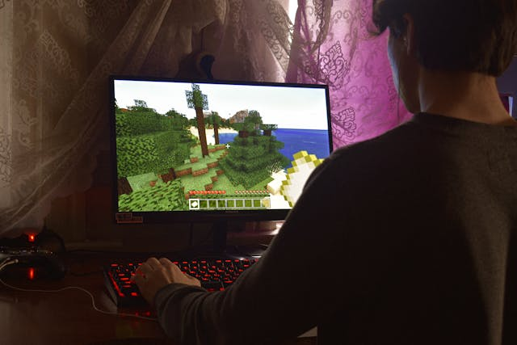

Relevant in All Modern Technologies and Fields
Today's technology is increasingly advancing and the basic understanding of how to use a computer is a fundamental essential for one's life. Here are some reasons why PC is relevant and more expansive than console:
- Straight forward;easy to pick up and understand the functions of a keyboard and mouse
- Used in any industry such as design, programming, etc.
- Easy access to internet, online resources, and bountiful of softwares and tools
- Flexible and easy to transfer data physically (latop or hard drives) and digitally (GoogleDrive and OneDrive)
Main Platform for Gaming
PC platform is growing larger every day. It is the biggest gaming platform for gamers and main platform fo game developers and companies. These can range from triple A studios to small indie developers.
It's accessible for everyone who enjoys gaming and want a wide community. Here are some reasons why playing on the PC platform can be a better exeperience:
- Wide variety of controls that provide different experiences
- More open communication and news updates for both games and other aspects of life
- Mouse and keyboard provides better precision
- Way more sales and access to variety of games new and old. Emulators can grant access to console games!
- Although you could mod on console, it is super limited to PC modding and some consoles do no allow or support mods/mod creations. PC modding is much easier and have so much more freedom to explore creatively.
Wide in Customization and Builds

Upgrades people, upgrades! Although PCs can be a higher average cost, it is a good investment that can last and provide a powerhouse for more heavy programs, such as Adobe Suite. There is more wide access to repairs, tutorials, and switching out parts.
Besides more professionals in its expertise, here are some reasons that computers are more customizable and fits your needs:
- Longevity, upgradable and interchangable of products. Parts of a computer can be easily replaceable, or if a part breaks it only needs that part to be fixed. Can mix and match products depending what you want brand-wise or your functionality (such as gaming focused or better optimization)
- With browsers or multiple monitors, can easily multitask and add more than just basic parts (such as video cameras, standalone mics, etc.)
- More powerful = more complex graphics and better performance
- Aesthetics;if choosing to build, can be personalized more and do cool setups (how many monitors is too much monitors?)
So Why Not Choose PC?
the PC platform, or widely known as utilizing computers, can be good for anyone, whether they want to game, work, or search up anything in only a few seconds.